Bibliothèques
librairie “morta_nuts2”
[1]:
1
[1]:
1
[2]:
import sys, os
sys.path.append(os.path.abspath(".."))
import geopandas as gpd
import sys
sys.executable
import numpy as np
[3]:
from morta_nuts2.data.eurostat import*
from morta_nuts2.data.mortality_table import*
from morta_nuts2.model.Bsplines.Bsplines import make_bspline_basis,plot_Bsplines
from morta_nuts2.model.parameters_init.param_init import*
from morta_nuts2.model.projection.project_class import*
from morta_nuts2.model.LC_p.lcp_class import*
from morta_nuts2.model.LL_p.llp_class import*
from morta_nuts2.graph.plot_class import*
Test fonctions imports de data eurostat
[4]:
#EurostatConfig.set_default_shapefile("D:/mes_donnees/NUTS_2024.shp") # implémenter par defaut mais possible de le changer
EurostatConfig.set_default_data_path("C:/Users/Idrissa Belem/Documents/GitHub/morta_nuts2/data")
data_brute = Eurostat_data()
#Chargement des données - ultra simple
mortality_fr = data_brute.load("mortality", "BE")
deaths_fr = data_brute.load("deaths", "BE")
population_fr = data_brute.load("population", "BE")
#Tout charger d'un coup en dictionnaire
#data_fr = data_brute.load_all("FR")
📂 Loading NUTS shapefile... NUTS_RG_01M_2024_3035.shp
✅ Shapefile loaded (1798 features)
💾 [Eurostat] Cache → BE_mxt_raw.csv
💾 [Eurostat] Cache → BE_Dxt_raw.csv
💾 [Eurostat] Cache → BE_Lxt_raw.csv
[5]:
#data_fr = data_brute.load_all("FR")
Test function for data create
[6]:
morta = MortalityCalculator()
table = morta.calculate_mortality(mortality_fr,population_fr,deaths_fr,gender="T")
2026-03-25 11:26:03,256 - MortalityCalculator - INFO - Loading shapefile: c:\Users\Idrissa Belem\Documents\GitHub\morta_nuts2\NUTS_files\NUTS_RG_01M_2024_3035.shp
2026-03-25 11:26:03,576 - MortalityCalculator - INFO - 1793 regions loaded
2026-03-25 11:26:03,589 - MortalityCalculator - INFO - MortalityCalculator initialized with 1793 regions
2026-03-25 11:26:03,591 - MortalityCalculator - INFO - Validating input data...
2026-03-25 11:26:05,135 - MortalityCalculator - INFO - Validation successful
2026-03-25 11:26:05,137 - root - INFO - validate_input_data executed in 1.55 seconds
2026-03-25 11:26:05,237 - MortalityCalculator - INFO - Harmonized ages: 96 common ages
2026-03-25 11:26:05,238 - MortalityCalculator - INFO - Building pivots...
2026-03-25 11:26:05,403 - MortalityCalculator - INFO - Processing 11 regions with 20 threads
2026-03-25 11:26:05,439 - MortalityCalculator - INFO - Progress: 10/11 regions processed
2026-03-25 11:26:05,440 - MortalityCalculator - INFO - Progress: 11/11 regions processed
2026-03-25 11:26:05,443 - root - INFO - _parallel_processing executed in 0.04 seconds
2026-03-25 11:26:05,443 - MortalityCalculator - INFO - Building final DataFrame...
2026-03-25 11:26:05,460 - MortalityCalculator - INFO - Calculation complete: 31955 rows generated
2026-03-25 11:26:05,463 - root - INFO - calculate_mortality executed in 1.87 seconds
[7]:
table = table[table['year'] != 2024]
Paramètres
[15]:
Muxtg,Dxtg, Extg, xv, tv, regions = build_input_from_dataframe(table)
print("Shape Dxtg :", Dxtg.shape)
print("Shape Extg :", Extg.shape)
print("Shape Muxtg :", Muxtg.shape)
print("Ages :", len(xv))
print("Years :", len(tv))
print("Regions :", len(regions))
nb_regions = len(regions)
nb_years = len(tv)
degree = 3
n_knots = 25
nb_iter = 5000
lam = 0
Dxt = np.sum(Dxtg, axis=2)
Ext = np.sum(Extg, axis=2)
path_fr ="C:/Users/Idrissa Belem/Documents/GitHub/morta_nuts2/output_note/BE"
Shape Dxtg : (83, 34, 11)
Shape Extg : (83, 34, 11)
Shape Muxtg : (83, 34, 11)
Ages : 83
Years : 34
Regions : 11
modèle Lee carter
modèle Lee carter non paramétrique
[9]:
#LC initial values
ax_init = -0.001*np.zeros_like(xv)
bx_init = 0.001*np.ones_like(xv)
kappa_init= np.ones(len(tv))
[10]:
model_classic = LeeCarter.Classic(nb_iter=nb_iter, eta=1)
results_lc_classic = model_classic.fit(
ax = ax_init,
bx = bx_init,
kappa = kappa_init,
Extg = Extg,
Dxtg = Dxtg,
xv = xv,
tv = tv,
)
[11]:
results_lc_classic['fit_statistics']
[11]:
| N | m | degree | dofs | lnL | AIC | BIC | |
|---|---|---|---|---|---|---|---|
| 0 | 31042 | NA | NA | 200 | -109700.37 | 219800.73 | 221469.35 |
modèle Lee carter paramétrique
[12]:
_, _, n_basis = make_bspline_basis(
xv, degree, n_knots)
[13]:
ax_coef_init, bx_coef_init, kappa_init = lcp_parametrique_init_national(
Dxtg, Extg, xv, tv, n_basis=n_basis, degree=degree, n_knots=n_knots
)
[14]:
#
model_nat = LeeCarter.Parametric.National(
degree=degree,
n_knots=n_knots,
lam=lam,
nb_iter=nb_iter,
eta0=0.2,
tol=1e-4,
verbose=True,
)
results_lcp_nat = model_nat.fit(
ax_coef_init = ax_coef_init,
bx_coef_init = bx_coef_init,
kappa_init = kappa_init,
Extg = Extg,
Dxtg = Dxtg,
xv = xv,
tv = tv,)
It 0 | lnL = -110568.3207 | Δ = +inf | η = 0.20000
It 10 | lnL = -109836.4380 | Δ = +2.495263 | η = 0.32578
It 20 | lnL = -109831.7263 | Δ = +0.167556 | η = 0.53066
It 30 | lnL = -109830.8684 | Δ = +0.039779 | η = 0.86439
It 40 | lnL = -109830.7007 | Δ = +0.005724 | η = 1.40800
It 50 | lnL = -109830.6865 | Δ = -0.003114 | η = 2.00000
Convergence reached (tolerance) at it 51.
======================================================================
FINAL STATISTICS
======================================================================
N n_basis dofs lnL deviance AIC BIC
31042 27 88.0 -109830.68 -21573927.89 219837.37 220571.56
Modèle Lee and Li
modèle Lee and Li non paramétrique
[16]:
#------------------------------------------------------------------------------
bx_gr_init = 0.0000010*np.ones((len(xv),len(regions)))
kappa_gr_init = 0.0000010*np.ones((len(tv),len(regions)))
[17]:
model_c = LiLee.Classic(nb_iter=nb_iter,
verbose=False)
result_ll = model_c.fit(
ax = ax_init,
bx = bx_init,
bx_gr = bx_gr_init,
kappa = kappa_init,
kappa_gr = kappa_gr_init,
Extg = Extg,
Dxtg = Dxtg,
Muxtg = Muxtg,
xv = xv,
tv = tv,
)
modèle Lee and Li avec Bsplines paramétrique
[18]:
# model_p = LiLee.Parametric.FullModel(
# degree=degree,
# n_knots=n_knots,
# lam=lam,
# nb_iter=10000,
# eta0=0.2,
# tol=1e-3,
# verbose=True,
# )
# init = model_p.init_params(Dxtg, Extg, xv )
[19]:
# result_llp = model_p.fit(*init, Extg, Dxtg, xv, tv)
[20]:
import pandas as pd
knots_list = [10, 15, 20, 25, 30,35,40]
results_by_knots = {}
for n_knots in knots_list:
model_p = LiLee.Parametric.FullModel(
degree=degree,
n_knots=n_knots,
lam=lam,
nb_iter=10000,
eta0=0.2,
tol=1e-3,
verbose=False,
)
init = model_p.init_params(Dxtg, Extg, xv)
results_by_knots[n_knots] = model_p.fit(*init, Extg, Dxtg, xv, tv)
# Accès au résultat pour un noeud spécifique
results_by_knots[10] # dict complet
results_by_knots[10]['fit_statistics'] # fit_statistics pour 10 noeuds
df_stats = pd.DataFrame.from_dict(
{n_knots: {k: v.iloc[0] for k, v in result['fit_statistics'].items()}
for n_knots, result in results_by_knots.items()},
orient='index'
)
df_stats.index.name = 'n_knots'
df_stats = df_stats.reset_index()
df_stats.to_csv(path_fr + "/df_stats_knots_llp.csv", index=False)
[21]:
df_stats
[21]:
| n_knots | N | dofs | lnL | deviance | AIC | BIC | |
|---|---|---|---|---|---|---|---|
| 0 | 10 | 31042 | 661.0 | -90447.23 | -21612694.79 | 182216.46 | 187731.25 |
| 1 | 15 | 31042 | 776.0 | -89203.70 | -21615181.86 | 179959.39 | 186433.64 |
| 2 | 20 | 31042 | 891.0 | -88947.77 | -21615693.72 | 179677.54 | 187111.24 |
| 3 | 25 | 31042 | 1006.0 | -88791.00 | -21616007.25 | 179594.01 | 187987.16 |
| 4 | 30 | 31042 | 1121.0 | -88698.49 | -21616192.27 | 179638.99 | 188991.60 |
| 5 | 35 | 31042 | 1236.0 | -88609.20 | -21616370.85 | 179690.41 | 190002.48 |
| 6 | 40 | 31042 | 1351.0 | -88538.51 | -21616512.24 | 179779.02 | 191050.54 |
[22]:
import pandas as pd
n_knots = 25
lam_list = [0,0.01, 0.1, 0.5, 1, 2,5, 10, 20]
results_by_lam = {}
for la in lam_list:
model_p = LiLee.Parametric.FullModel(
degree=degree,
n_knots=n_knots,
lam=la,
nb_iter=10000,
eta0=0.2,
tol=1e-3,
verbose=False,
)
init = model_p.init_params(Dxtg, Extg, xv)
results_by_lam[la] = model_p.fit(*init, Extg, Dxtg, xv, tv)
# DataFrame des fit_statistics
df_stats_lam = pd.DataFrame.from_dict(
{la: {k: v.iloc[0] for k, v in result['fit_statistics'].items()}
for la, result in results_by_lam.items()},
orient='index'
)
df_stats_lam.index.name = 'lam'
df_stats_lam = df_stats_lam.reset_index()
df_stats_lam.to_csv(path_fr + "/df_stats_lam_llp.csv", index=False)
[23]:
df_stats_lam
[23]:
| lam | N | dofs | lnL | deviance | AIC | BIC | |
|---|---|---|---|---|---|---|---|
| 0 | 0.00 | 31042 | 1006.00 | -88791.00 | -21616007.25 | 179594.01 | 187987.16 |
| 1 | 0.01 | 31042 | 1005.37 | -88793.28 | -21616002.70 | 179597.30 | 187985.21 |
| 2 | 0.10 | 31042 | 1000.39 | -88799.67 | -21615989.91 | 179600.13 | 187946.50 |
| 3 | 0.50 | 31042 | 985.40 | -89027.28 | -21615534.70 | 180025.35 | 188246.62 |
| 4 | 1.00 | 31042 | 973.17 | -89290.90 | -21615007.46 | 180528.13 | 188647.35 |
| 5 | 2.00 | 31042 | 956.58 | -89235.92 | -21615117.42 | 180384.99 | 188365.79 |
| 6 | 5.00 | 31042 | 927.56 | -89386.47 | -21614816.32 | 180628.06 | 188366.81 |
| 7 | 10.00 | 31042 | 900.19 | -89342.44 | -21614904.38 | 180485.25 | 187995.60 |
| 8 | 20.00 | 31042 | 868.67 | -89519.49 | -21614550.28 | 180776.32 | 188023.75 |
[ ]:
import pandas as pd
knots_list = [10, 15, 20, 25, 30,35,40]
records = []
for n_ks in knots_list:
model_p = LiLee.Parametric.FullModel(
degree=degree,
n_knots=n_ks,
lam=lam,
nb_iter=10000,
eta0=0.2,
tol=1e-3,
verbose=False,
)
init = model_p.init_params(Dxtg, Extg, xv)
result_llp = model_p.fit(*init, Extg, Dxtg, xv, tv)
stats = result_llp['fit_statistics'].copy()
stats['n_knots'] = n_ks
records.append(stats)
df_results = pd.concat(records, ignore_index=True)
[75]:
df_results
[75]:
| N | dofs | lnL | deviance | AIC | BIC | n_knots | |
|---|---|---|---|---|---|---|---|
| 0 | 62084 | 1277.0 | -219377.50 | -1.105235e+08 | 441308.99 | 452848.28 | 25 |
| 1 | 62084 | 1502.0 | -212069.58 | -1.105382e+08 | 427143.17 | 440715.61 | 25 |
| 2 | 62084 | 1727.0 | -210591.68 | -1.105411e+08 | 424637.35 | 440242.94 | 25 |
| 3 | 62084 | 1952.0 | -209899.18 | -1.105425e+08 | 423702.35 | 441341.10 | 25 |
| 4 | 62084 | 2177.0 | -209576.35 | -1.105431e+08 | 423506.70 | 443178.60 | 25 |
[37]:
# kappa_g = result_llp['parameters']["kappa_g"]
# mask = ~np.isin(tv, [2020, 2021])
# print("Drift kappa_g par région après fit :")
# for g, name in enumerate(regions):
# drift = np.diff(kappa_g[ g,mask]).mean()
# sens = "↓ OK" if drift < 0 else "↑ PROBLÈME"
# print(f" {name}: {drift:.4f} {sens}")
[ ]:
[34]:
import pandas as pd
models = {
"LC": results_lc_classic,
"LC parametric": results_lcp_nat,
"Li-Lee": result_ll,
"Li-Lee parametric": result_llp,
}
rows = []
for name, result in models.items():
stats = result['fit_statistics'].iloc[0]
rows.append({
"Model": name,
"N": stats["N"],
"dofs": stats["dofs"],
"lnL": stats["lnL"],
"AIC": stats["AIC"],
"BIC": stats["BIC"]
})
comparison_table = pd.DataFrame(rows)
#comparison_table.to_csv(path_fr + "/models.csv", index=False)
[35]:
mae_ll = compute_mae(Muxtg, result_ll['fitted_values']['mu'], weights=Extg)
mae_llp = compute_mae(Muxtg, result_llp['fitted_values']['mu'], weights=Extg)
mae_lcp = compute_mae(Muxtg, results_lcp_nat['fitted_values']['mu'], weights=Extg)
print(f"MAE global — LC : {mae_ll['global']:.6f} | LL : {mae_llp['global']:.6f}")
print(f"WMAE global — LC : {mae_ll['wmae_global']:.6f} | LL : {mae_llp['wmae_global']:.6f}")
MAE global — LC : 0.000459 | LL : 0.000429
WMAE global — LC : 0.000294 | LL : 0.000266
[36]:
tv_future = np.arange(1990, 2024) #années
mp = MapPlotter(regions, mae_llp['wmae_by_region'], tv_future, "FR", "WMAE",cmap="Greens")
#mp.plot_static(mae_llp['wmae_by_region'])
mp.plot_compare_models(
other_data=mae_lcp['wmae_by_region'],
model_labels=("Lee and Li parametric", "Lee and Li"),
static=True,
cmap_diverging="Greens", # diverging pour erreurs signées
)
mp.save(path_fr +"/WMAE_llp_vs_lc_color_detra.png")
C:\Users\Idrissa Belem\Documents\GitHub\morta_nuts2\src\morta_nuts2\graph\plot_class.py:698: UserWarning: This figure includes Axes that are not compatible with tight_layout, so results might be incorrect.
plt.tight_layout()
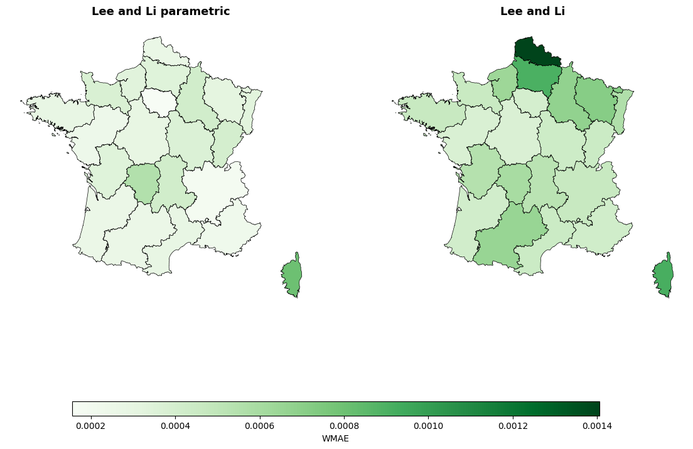
✅ Saved → C:/Users/Idrissa Belem/Documents/GitHub/morta_nuts2/output_note/FR/WMAE_llp_vs_lc_color_detra.png
[37]:
import matplotlib.pyplot as plt
import numpy as np
# --- Tes arrays de MAE par modèle ---
mae = {
"LL": mae_ll['wmae_by_region'] , # ton array
"LL parametric": mae_llp['wmae_by_region'],
"LC parametric": mae_lcp["wmae_by_region"] }
# -------- abbreviation of NUTS 2 regions --------
# Bel_nuts2 = {
# "BE10": "BXL",
# "BE21": "ANT",
# "BE22": "LIM",
# "BE23": "OVL",
# "BE24": "VlB",
# "BE25": "WVl",
# "BE31": "BWA",
# "BE32": "HAI",
# "BE33": "LIE",
# "BE34": "LUX",
# "BE35": "NAM"
# }
France_nuts2 = {
"FR10": "IDF", "FRB0": "CVL", "FRC1": "BOU", "FRC2": "FCO",
"FRD1": "BN", "FRD2": "HN", "FRE1": "NPC", "FRE2": "PIC",
"FRF1": "ALS", "FRF2": "CHA", "FRF3": "LOR", "FRG0": "PDL",
"FRH0": "BRE", "FRI1": "AQU", "FRI2": "LIM", "FRI3": "POI",
"FRJ1": "LR", "FRJ2": "MPY", "FRK1": "AUV", "FRK2": "RA",
"FRL0": "PACA","FRM0": "COR"
}
region_labels = list(France_nuts2.values())
models = list(mae.keys())
colors = ["#1f77b4", "#ff7f0e", "#2ca02c", "#d62728"] # bleu, orange, vert, rouge
n = len(region_labels)
n_models = len(models)
width = 0.8 / n_models # barres qui se touchent presque
x = np.arange(n)
fig, ax = plt.subplots(figsize=(14, 5))
for i, (model, color) in enumerate(zip(models, colors)):
offset = (i - n_models / 2 + 0.5) * width
ax.bar(x + offset, mae[model], width, label=model, color=color)
ax.set_xticks(x)
ax.set_xticklabels(region_labels, rotation=0, fontsize=8)
ax.set_xlabel("Category")
ax.set_ylabel("Value")
ax.legend()
ax.grid(axis="y", alpha=0.3)
#ax.set_title("Histogram of weighted mean absolute errors by regions, France.")
#plt.savefig(path_fr + "/Histogram_wmae.png", dpi=150, bbox_inches="tight")
plt.tight_layout()
plt.show()
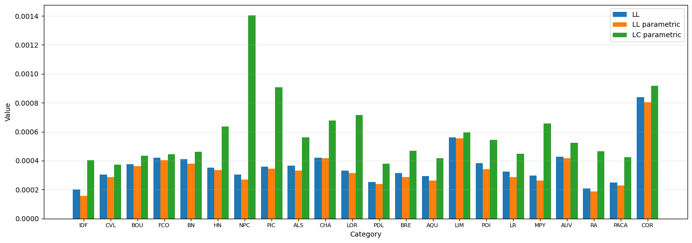
[38]:
import pandas as pd
# DataFrame avec régions en index
df_wmae = pd.DataFrame(mae, index=region_labels)
# Affichage
df_wmae
[38]:
| LL | LL parametric | LC parametric | |
|---|---|---|---|
| IDF | 0.000201 | 0.000156 | 0.000404 |
| CVL | 0.000304 | 0.000288 | 0.000372 |
| BOU | 0.000377 | 0.000363 | 0.000434 |
| FCO | 0.000421 | 0.000402 | 0.000446 |
| BN | 0.000410 | 0.000378 | 0.000461 |
| HN | 0.000353 | 0.000335 | 0.000637 |
| NPC | 0.000303 | 0.000269 | 0.001406 |
| PIC | 0.000358 | 0.000344 | 0.000905 |
| ALS | 0.000367 | 0.000331 | 0.000561 |
| CHA | 0.000420 | 0.000416 | 0.000677 |
| LOR | 0.000331 | 0.000314 | 0.000717 |
| PDL | 0.000253 | 0.000239 | 0.000378 |
| BRE | 0.000315 | 0.000286 | 0.000467 |
| AQU | 0.000294 | 0.000263 | 0.000417 |
| LIM | 0.000561 | 0.000556 | 0.000596 |
| POI | 0.000383 | 0.000342 | 0.000545 |
| LR | 0.000325 | 0.000286 | 0.000447 |
| MPY | 0.000296 | 0.000261 | 0.000657 |
| AUV | 0.000429 | 0.000416 | 0.000524 |
| RA | 0.000209 | 0.000189 | 0.000466 |
| PACA | 0.000249 | 0.000227 | 0.000422 |
| COR | 0.000839 | 0.000804 | 0.000917 |
[ ]:
df_final = df_wmae.copy()
df_final["LLp vs LL (%)"] = (df_wmae["LL parametric"] - df_wmae["LL"]) / df_wmae["LL"] * 100
df_final["LCp vs LL (%)"] = (df_wmae["LC parametric"] - df_wmae["LL"]) / df_wmae["LL"] * 100
df_final["LLp vs LCp (%)"] = (df_wmae["LL parametric"] - df_wmae["LC parametric"]) / df_wmae["LC parametric"] * 100
df_final.head()
#df_final.to_csv(path_fr + "/wmae.csv", index=False)
| LL | LL parametric | LC parametric | LLp vs LL (%) | LCp vs LL (%) | LLp vs LCp (%) | |
|---|---|---|---|---|---|---|
| IDF | 0.000201 | 0.000156 | 0.000404 | -22.625123 | 100.545027 | -61.417704 |
| CVL | 0.000304 | 0.000288 | 0.000372 | -5.385100 | 22.323840 | -22.652117 |
| BOU | 0.000377 | 0.000363 | 0.000434 | -3.681576 | 15.050288 | -16.281458 |
| FCO | 0.000421 | 0.000402 | 0.000446 | -4.499609 | 5.956236 | -9.868079 |
| BN | 0.000410 | 0.000378 | 0.000461 | -7.643449 | 12.559974 | -17.949029 |
[ ]:
import numpy as np
import matplotlib.pyplot as plt
import matplotlib.cm as cm
from matplotlib.lines import Line2D
# ─────────────────────────────────────────────
# CONFIG — adapte ces valeurs à ton projet
# ─────────────────────────────────────────────
CURVE_KEY = "beta_xg" # clé dans result_llp["curves"]
COMPARE_KEY = None # ex: "beta_xg" dans result_ref, ou None
STYLE = "white" # "dark", "whitegrid", "white"
# ─────────────────────────────────────────────
# ← remplace par ta vraie courbe
# ─────────────────────────────────────────────
# Fonction principale
# ─────────────────────────────────────────────
def plot_regional_curves(
xv,
curves, # shape (n_ages, n_regions)
region_labels,
compare_curve=None,
compare_label="Référence",
curve_key=r"$\beta_{x,g}$",
title_prefix="Courbes régionales",
style="white",
):
import seaborn as sns
sns.set_theme(style=style, font_scale=1.1)
n_regions = len(region_labels)
mid = n_regions // 2
splits = [
(region_labels[:mid], curves[:, :mid], " 1 / 2"),
(region_labels[mid:], curves[:, mid:], " 2 / 2"),
]
# Palette continue sur tout le set de régions
palette = cm.get_cmap("tab20", n_regions)
colors = [palette(i) for i in range(n_regions)]
fig, axes = plt.subplots(
1, 2,
figsize=(18, 6),
sharey=True,
facecolor="white",
)
fig.subplots_adjust(wspace=0.08)
bg_color = "white"
txt_color = "#1a1a2e"
for ax, (labels, sub_curves, subtitle) in zip(axes, splits):
ax.set_facecolor(bg_color)
start_idx = 0 if labels is region_labels[:mid] else mid
for j, region in enumerate(labels):
global_idx = start_idx + j
ax.plot(
xv, sub_curves[:, j],
color=colors[global_idx],
linewidth=1.4,
alpha=0.85,
label=region,
)
# Courbe de référence
if compare_curve is not None:
ax.plot(
xv, compare_curve,
color="#E63946",
linewidth=2.2,
linestyle="--",
alpha=0.95,
label=compare_label,
zorder=10,
)
ax.set_xlabel("Âge", color=txt_color, fontsize=12)
ax.set_title(f"{title_prefix} — {subtitle}", color=txt_color, fontsize=13, pad=10)
ax.tick_params(colors=txt_color)
for spine in ax.spines.values():
spine.set_edgecolor("#CCCCCC")
legend = ax.legend(
fontsize=8,
framealpha=0.85,
loc="upper left",
ncol=1,
)
for text in legend.get_texts():
text.set_color(txt_color)
axes[0].set_ylabel(curve_key, color=txt_color, fontsize=12)
# Titre global
fig.suptitle(
title_prefix,
fontsize=16,
fontweight="bold",
color=txt_color,
y=1.02,
)
# # Légende partagée pour la courbe de référence (si présente)
# if compare_curve is not None:
# ref_handle = Line2D([0], [0], color="#E63946", linewidth=2.2, linestyle="--")
# fig.legend(
# handles=[ref_handle],
# labels=[compare_label],
# loc="lower center",
# ncol=1,
# fontsize=10,
# framealpha=0.9,
# bbox_to_anchor=(0.5, -0.06),
# )
plt.tight_layout()
#plt.savefig(path_fr + "/regional_beta_LL.png", dpi=150, bbox_inches="tight")
plt.show()
print("✅ Graphe sauvegardé : regional_curves.png")
# ─────────────────────────────────────────────
# Appel
# ─────────────────────────────────────────────
plot_regional_curves(
xv = xv,
curves = result_ll["parameters"]["bx_gr"],
region_labels = region_labels,
compare_curve = None , #results_lc_classic['parameters']["bx_coef"],
compare_label = 'LC',
curve_key = r"$\beta_{x,g}$",
title_prefix = '',
style = STYLE,
)
C:\Users\Idrissa Belem\AppData\Local\Temp\ipykernel_16732\3867936858.py:41: MatplotlibDeprecationWarning: The get_cmap function was deprecated in Matplotlib 3.7 and will be removed in 3.11. Use ``matplotlib.colormaps[name]`` or ``matplotlib.colormaps.get_cmap()`` or ``pyplot.get_cmap()`` instead.
palette = cm.get_cmap("tab20", n_regions)
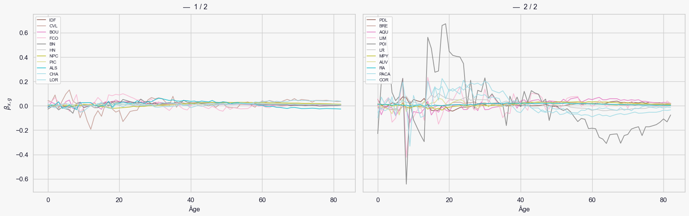
✅ Graphe sauvegardé : regional_curves.png
[41]:
mu_obs = Dxtg / Extg
mu_nat = results_lcp_nat["fitted_values"]["mu"] # (83, 34)
mu_nat_rep = np.repeat(mu_nat[:, :, None], 22, axis=2)
curves = {
"Observed": mu_obs,
"LL": result_ll['fitted_values']['mu'],
"LL parametric": result_llp["fitted_values"]["mu"],
"LC parametric": mu_nat_rep }
[42]:
# ── RegionalCurvePlotter ────────────────────────────────────────────
plotter = RegionalCurvePlotter(
x_values=xv,
curves_dict=curves,
tv=tv,
regions=region_labels,
)
plotter.plot(year_to_plot=2015)
#plotter.save(path_fr+ "/mortality_v2_2015.png")
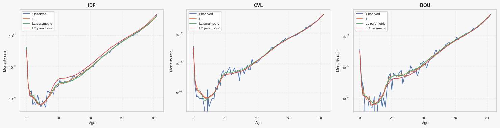
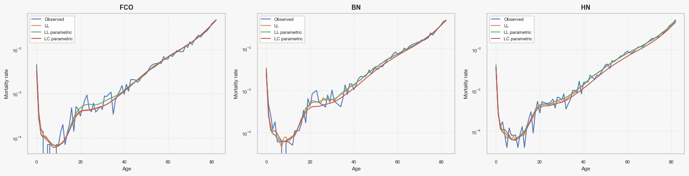
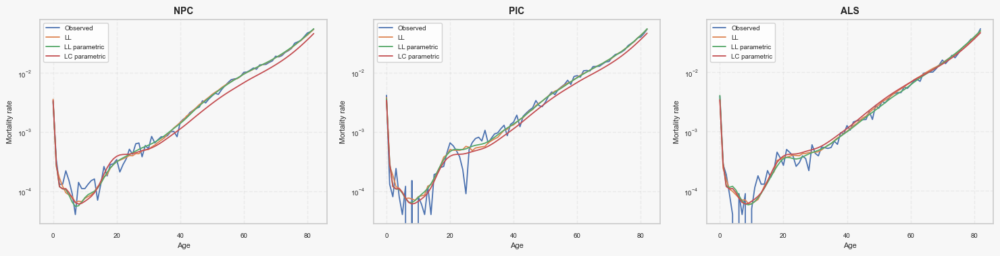
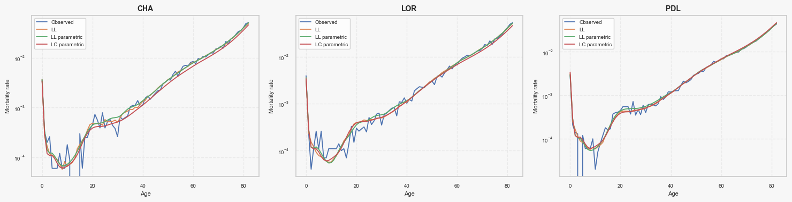
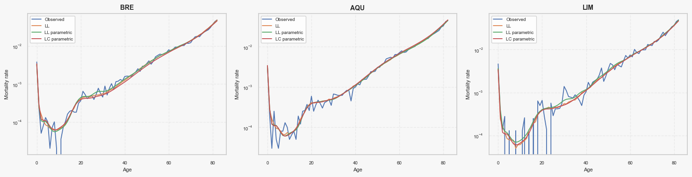
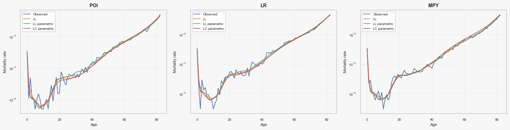
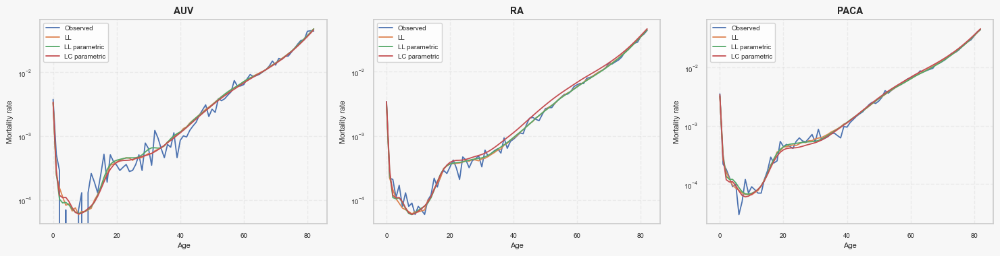
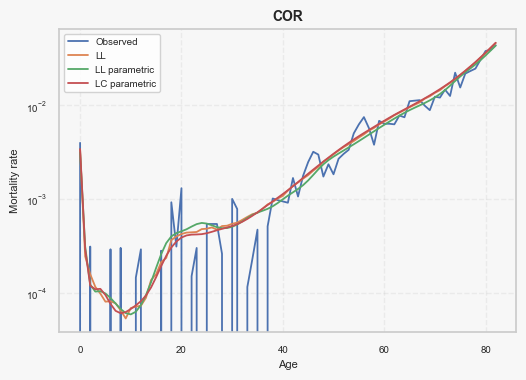
Projector
Lee Carter and Lee and Li
[43]:
n_sim = 2000
horizon = 50
covid_years = ['2019','2020',"2021"]
[44]:
proj_lcp_stoch = ProjectorLC_SVD(
results_lcp_nat, tv,
horizon=horizon,
model="rw",
exclude_years=covid_years,
stochastic=False,
n_sim=n_sim,
nb_components=2
).project()
Lee and Li parametric & classic
[45]:
proj_llp_stoch = ProjectorLeeLi(
result_llp, tv,
horizon=horizon,
model="rw",
exclude_years=covid_years,
stochastic=False,
n_sim=n_sim,
nb_components=2
).project()
[46]:
proj_ll_stoch = ProjectorLeeLi(
result_ll, tv,
horizon=horizon,
model="rw",
exclude_years=covid_years,
stochastic=False,
n_sim=n_sim,
nb_components=2
).project()
[47]:
# kappa = result_llp["parameters"]["kappa"]
# kappa_g = result_llp["parameters"]["kappa_g"] # (nb_regions, T)
# var_kappa = np.var(kappa)
# var_kappa_g = np.var(kappa_g)
# print("Var kappa (commun):", var_kappa)
# print("Var kappa_g (regional):", var_kappa_g)
[ ]:
# ─────────────────────────────────────────────────────────────────────────────
# 3b. Plot kappa_g (historical + projected) by region
# ─────────────────────────────────────────────────────────────────────────────
def plot_kappa_g(
kappa_g_hist: np.ndarray,
tv: np.ndarray,
projection: dict,
horizon: int,
stochastic: bool = True,
region_names: list = None,
exclude_years: list = None,
regions_per_fig: int = 3,
save_path: str = None,
dpi: int = 150,
):
"""
Plot historical and projected kappa_g by region.
Generates one figure per group of `regions_per_fig` regions.
Parameters
----------
kappa_g_hist : (nb_regions, nb_years)
Historical kappa_g from the fitted model.
tv : array-like
Observation year vector, length nb_years.
projection : dict
Output of ProjectorLeeLi.project().
horizon : int
Number of projected years.
stochastic : bool
If True, uses median + confidence interval from projection dict.
region_names : list, optional
Labels for each region. Defaults to ["Region 1", "Region 2", ...].
exclude_years : list, optional
Years to mark as excluded (greyed out) on the plot.
regions_per_fig : int
Number of regions per figure (= number of subplot columns). Default: 3.
save_path : str | Path, optional
Base path for saving figures. If provided, each figure is saved with
a "_part{i}" suffix before the extension.
Example: "output/kappa_g.png" → "output/kappa_g_part1.png", ...
The parent directory is created automatically if it does not exist.
dpi : int
Resolution used when saving (default: 150).
Returns
-------
figs : list of matplotlib Figure
One figure per group of regions.
"""
import matplotlib.pyplot as plt
import matplotlib.patches as mpatches
from pathlib import Path
tv = np.asarray(tv)
nb_regions = kappa_g_hist.shape[0]
tv_proj = np.arange(tv[-1] + 1, tv[-1] + 1 + horizon)
exclude_years = exclude_years if exclude_years is not None else []
if region_names is None:
region_names = [f"Region {g+1}" for g in range(nb_regions)]
colors = plt.rcParams["axes.prop_cycle"].by_key()["color"]
n_figs = int(np.ceil(nb_regions / regions_per_fig))
figs = []
for f in range(n_figs):
g_start = f * regions_per_fig
g_end = min(g_start + regions_per_fig, nb_regions)
group = list(range(g_start, g_end))
ncols = len(group)
fig, axes = plt.subplots(1, ncols, figsize=(5 * ncols, 3.5), sharey=False)
axes = np.array(axes).reshape(-1)
for pos, g in enumerate(group):
ax = axes[pos]
color = colors[g % len(colors)]
hist = kappa_g_hist[g, :]
# ── historical ──────────────────────────────────────────
mask_excl = np.isin(tv, exclude_years)
ax.plot(tv[~mask_excl], hist[~mask_excl], color=color, lw=1.8, label="")
if mask_excl.any():
ax.plot(tv[mask_excl], hist[mask_excl], color=color, lw=1.2,
linestyle="--", alpha=0.45, label="Années exclues")
# ── projection ──────────────────────────────────────────
last_val = hist[-1]
if stochastic:
kg_med = projection["kappa_g_median"]
kg_lo = projection["kappa_g_lower"]
kg_hi = projection["kappa_g_upper"]
tv_bridge = np.concatenate([[tv[-1]], tv_proj])
med_bridge = np.concatenate([[last_val], kg_med[:, g]])
lo_bridge = np.concatenate([[last_val], kg_lo[:, g]])
hi_bridge = np.concatenate([[last_val], kg_hi[:, g]])
ax.fill_between(tv_bridge, lo_bridge, hi_bridge,
color=color, alpha=0.18, label="IC 95%")
ax.plot(tv_bridge, med_bridge, color=color, lw=1.8,
linestyle="--", label="Médiane projetée")
else:
kg_fut = projection["kappa_g_future"]
tv_bridge = np.concatenate([[tv[-1]], tv_proj])
fut_bridge = np.concatenate([[last_val], kg_fut[:, g]])
ax.plot(tv_bridge, fut_bridge, color=color, lw=1.8,
linestyle="--", label="Projected")
# ── styling ─────────────────────────────────────────────
ax.axvline(tv[-1], color="grey", lw=0.8, linestyle=":")
ax.set_title(region_names[g], fontsize=11)
ax.set_xlabel("Année")
ax.set_ylabel(r"$\kappa_t^{(g)}$")
ax.legend(fontsize=7, loc="best")
ax.grid(True, alpha=0.3)
fig.tight_layout()
figs.append(fig)
# ── save ────────────────────────────────────────────────────
# if save_path is not None:
# p = Path(save_path)
# p.parent.mkdir(parents=True, exist_ok=True)
# out = p.parent / f"{p.stem}_part{f + 1}{p.suffix}"
# fig.savefig(out, dpi=dpi, bbox_inches="tight")
# print(f"✅ Saved → {out}")
plt.show()
return figs
[50]:
fig = plot_kappa_g(
kappa_g_hist=result_llp["parameters"]["kappa_g"], # (nb_regions, T)
tv=tv,
projection=proj_llp_stoch, # dict retourné par .project()
horizon=50,
stochastic=False, # False si projection déterministe
region_names=region_labels,
exclude_years=[],
save_path=path_fr + "/kappa_by_region_project.png"
)
#fig.savefig("kappa_g.png", bbox_inches="tight")
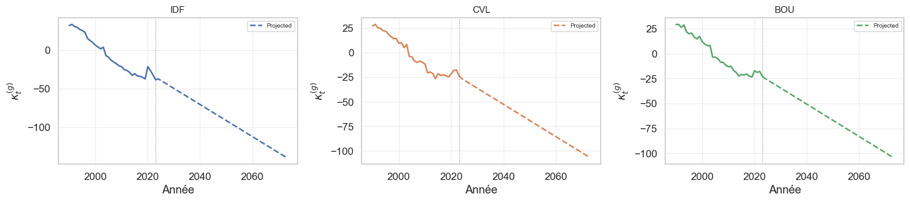
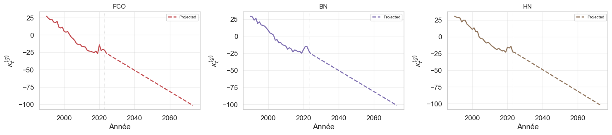
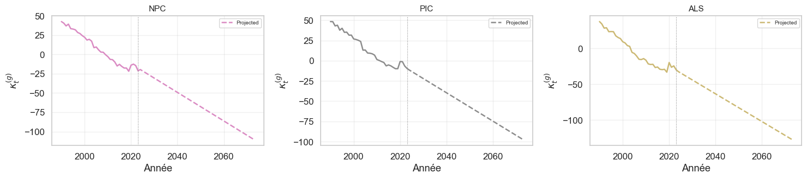
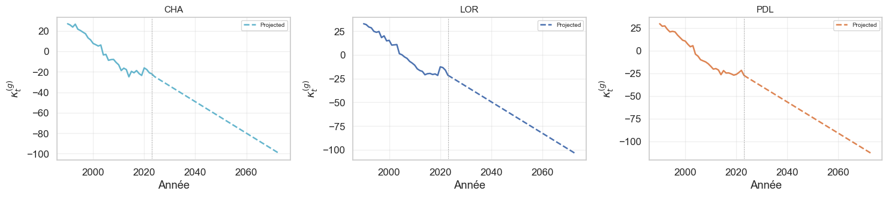
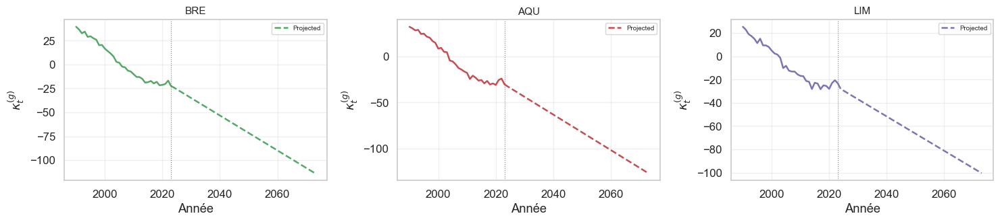
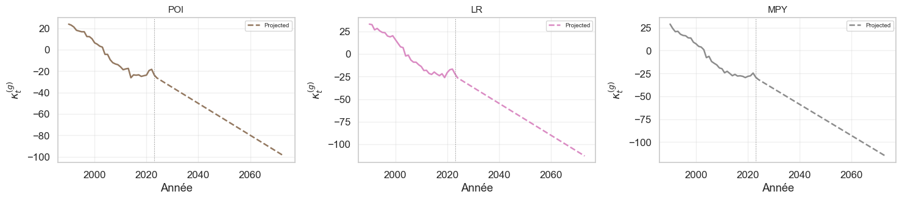
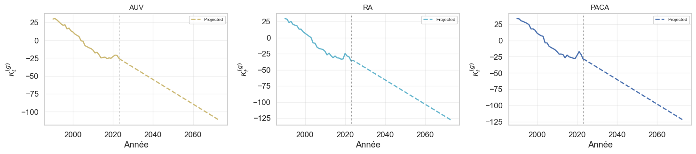
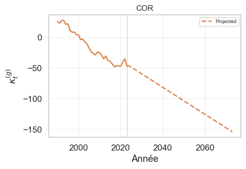
HighAgeExtrapolator
[51]:
start_age = 60
[52]:
# logmu_nation_lcp, xv_full = HighAgeExtrapolator(
# xv = xv,
# x_extrap = 110, # âge cible
# x_extrap_start = start_age, # début de la fenêtre de régression commencer à 60 ans
# method="linear",
# log_Muxtg = logmu_lc_national, auto_start =False).extrapolate()
# # logmu_extrap
# # xv_full → [0, 1, ..., 110]
# print("log-mu extrapolé :", logmu_nation_lcp.shape)
# print("Grille d'âges :", xv_full[[0, -1]])
[53]:
# ── 2. Extrapolation 82 → 110 ─────────────────────────────────────
logmu_extrap_llp, xv_full = HighAgeExtrapolator(
xv = xv,
x_extrap = 110, # âge cible
x_extrap_start = start_age, # début de la fenêtre de régression commencer à 60 ans
method="linear",
log_Muxtg = proj_llp_stoch["logmu_future"], auto_start =False).extrapolate()
# logmu_extrap
# xv_full → [0, 1, ..., 110]
print("log-mu extrapolé :", logmu_extrap_llp.shape)
print("Grille d'âges :", xv_full[[0, -1]])
log-mu extrapolé : (111, 50, 22)
Grille d'âges : [ 0 110]
[54]:
# ── 2. Extrapolation 82 → 110 ─────────────────────────────────────
logmu_extrap_ll, xv_full = HighAgeExtrapolator(
xv = xv,
x_extrap = 110, # âge cible
x_extrap_start = start_age, # début de la fenêtre de régression
method="linear",
log_Muxtg = proj_ll_stoch["logmu_future"],auto_start =False
).extrapolate()
# logmu_extrap
# xv_full → [0, 1, ..., 110]
print("log-mu extrapolé :", logmu_extrap_ll.shape)
print("Grille d'âges :", xv_full[[0, -1]])
log-mu extrapolé : (111, 50, 22)
Grille d'âges : [ 0 110]
[55]:
# ── 2. Extrapolation 82 → 110 ## Lee carter paramétrique
logmu_llp_hist, xv_full = HighAgeExtrapolator(
xv = xv,
x_extrap = 110, # âge cible
x_extrap_start = start_age, # début de la fenêtre de régression
method="linear",
log_Muxtg = result_llp["fitted_values"]["log_mu"],auto_start =False
).extrapolate()
# logmu_extrap
# xv_full → [0, 1, ..., 110]
print("log-mu extrapolé :", logmu_llp_hist.shape)
print("Grille d'âges :", xv_full[[0, -1]]) # [ 0 110]
log-mu extrapolé : (111, 34, 22)
Grille d'âges : [ 0 110]
[56]:
# ── 2. Extrapolation 82 → 110 ## Lee carter paramétrique
logmu_ll_hist, xv_full = HighAgeExtrapolator(
xv = xv,
x_extrap = 110, # âge cible
x_extrap_start = start_age, # début de la fenêtre de régression
method="linear",
log_Muxtg = result_ll["fitted_values"]["log_mu"],auto_start =False
).extrapolate()
# logmu_extrap
# xv_full → [0, 1, ..., 110]
print("log-mu extrapolé :", logmu_ll_hist.shape)
print("Grille d'âges :", xv_full[[0, -1]]) # [ 0 110]
log-mu extrapolé : (111, 34, 22)
Grille d'âges : [ 0 110]
[57]:
logmu_full_llp = concat_logmu_time(logmu_llp_hist,logmu_extrap_llp)
logmu_full_ll = concat_logmu_time(logmu_ll_hist,logmu_extrap_ll)
[58]:
print(logmu_full_llp.shape)
print(logmu_full_ll.shape)
(111, 84, 22)
(111, 84, 22)
LifeExpectancy
[59]:
esp_llp = LifeExpectancy(np.exp(logmu_full_llp)).compute()
esp_ll = LifeExpectancy(np.exp(logmu_full_ll)).compute()
[60]:
esp_llp.shape
[60]:
(111, 84, 22)
[61]:
e0_llp = esp_llp[0, :, :]
e0_ll = esp_ll[0, :, :]
# shape = (nb_horizon, nb_region)
[62]:
df_esp_llp = pd.DataFrame(
e0_llp,
index=np.arange(1990, 2023 + 51), # ex: [2023, 2030, 2050]
columns=region_labels # ex: ["Ile-de-France", "Occitanie", ...]
)
df_esp_llp.index.name = "horizon"
df_esp_llp.to_csv(path_fr + "/LifeExpectancy_at_birth_ll_parametric.csv", index=False)
[69]:
df_esp_llp.head(50)
[69]:
| IDF | CVL | BOU | FCO | BN | HN | NPC | PIC | ALS | CHA | ... | BRE | AQU | LIM | POI | LR | MPY | AUV | RA | PACA | COR | |
|---|---|---|---|---|---|---|---|---|---|---|---|---|---|---|---|---|---|---|---|---|---|
| horizon | |||||||||||||||||||||
| 1990 | 77.551338 | 77.606037 | 76.784613 | 76.727561 | 76.428900 | 76.123824 | 74.120541 | 75.149659 | 75.456706 | 76.225322 | ... | 75.359401 | 77.150848 | 76.686565 | 77.622859 | 77.100960 | 77.588793 | 76.298512 | 77.262613 | 77.113966 | 76.302111 |
| 1991 | 77.406599 | 77.464604 | 76.797469 | 77.103625 | 76.582307 | 76.316694 | 74.402343 | 75.194603 | 75.874896 | 76.403616 | ... | 75.754609 | 77.373544 | 77.026863 | 77.772621 | 77.197018 | 78.165679 | 76.255948 | 77.400564 | 77.194041 | 76.675694 |
| 1992 | 77.715220 | 77.840553 | 77.144314 | 77.346656 | 77.126199 | 76.338529 | 74.821227 | 75.787131 | 76.547270 | 76.630854 | ... | 76.239454 | 77.606597 | 77.482985 | 77.958981 | 77.834403 | 78.562050 | 76.475211 | 77.994972 | 77.525285 | 76.084155 |
| 1993 | 77.788403 | 77.867864 | 76.806434 | 77.232494 | 76.748307 | 76.387509 | 74.496926 | 75.648032 | 76.452772 | 76.244545 | ... | 75.978493 | 77.508969 | 77.661484 | 78.289292 | 77.620404 | 78.485915 | 76.768638 | 77.760031 | 77.608825 | 76.025201 |
| 1994 | 78.066105 | 78.079323 | 77.583535 | 77.668442 | 77.622415 | 77.026934 | 75.146726 | 76.305451 | 77.051982 | 76.776325 | ... | 76.610530 | 77.964352 | 77.879675 | 78.312395 | 77.868708 | 78.796982 | 77.046161 | 78.269544 | 77.729381 | 76.760392 |
| 1995 | 78.226417 | 78.109605 | 77.804028 | 77.753889 | 77.335283 | 76.716875 | 75.201398 | 76.023893 | 77.019896 | 76.920518 | ... | 76.516954 | 77.910604 | 78.324597 | 78.381491 | 78.054957 | 78.939177 | 77.275930 | 78.376089 | 77.877137 | 76.679673 |
| 1996 | 78.458194 | 78.396774 | 77.667278 | 77.524626 | 77.831037 | 76.685620 | 75.264291 | 76.557404 | 77.000178 | 77.067290 | ... | 76.736326 | 78.225670 | 77.802063 | 78.329630 | 78.039138 | 78.936713 | 77.151849 | 78.446197 | 78.098838 | 77.990719 |
| 1997 | 79.300530 | 78.621781 | 78.092602 | 78.490441 | 77.846959 | 77.282991 | 75.613738 | 76.459522 | 77.623406 | 77.180047 | ... | 76.858065 | 78.287193 | 78.449311 | 78.797686 | 78.389802 | 79.136563 | 77.784410 | 78.987584 | 78.764275 | 78.233517 |
| 1998 | 79.553145 | 78.804560 | 78.257330 | 78.584434 | 77.947921 | 77.548129 | 75.739864 | 76.855821 | 77.864253 | 77.630130 | ... | 77.546171 | 78.661774 | 78.408881 | 78.771627 | 78.451598 | 79.121592 | 77.611933 | 78.957900 | 78.711057 | 78.128118 |
| 1999 | 79.767832 | 78.704639 | 77.864024 | 78.381340 | 78.221610 | 77.764552 | 75.987297 | 76.765956 | 77.971831 | 77.786176 | ... | 77.433770 | 78.815407 | 78.491490 | 78.928376 | 78.236201 | 79.573372 | 78.001921 | 79.337618 | 78.868663 | 78.582093 |
| 2000 | 80.107017 | 79.217068 | 78.468970 | 79.118843 | 78.576357 | 78.069984 | 76.193565 | 77.272518 | 78.454094 | 78.160011 | ... | 77.888392 | 79.469910 | 78.837421 | 79.341866 | 78.665240 | 79.739852 | 78.158759 | 79.579370 | 79.335163 | 78.613322 |
| 2001 | 80.305586 | 79.085286 | 78.683457 | 79.163877 | 78.971622 | 77.741870 | 76.547021 | 77.276225 | 78.581217 | 78.228952 | ... | 78.143827 | 79.308583 | 79.072201 | 79.424772 | 79.050146 | 79.991507 | 78.435657 | 79.770566 | 79.509448 | 79.423471 |
| 2002 | 80.480867 | 79.569497 | 78.794651 | 78.994146 | 79.049988 | 78.329147 | 76.369439 | 77.324639 | 78.960210 | 78.317186 | ... | 78.394942 | 79.723540 | 79.125760 | 79.580858 | 79.428536 | 80.021048 | 78.589792 | 79.982643 | 79.648159 | 79.278216 |
| 2003 | 80.231556 | 79.183186 | 78.751882 | 79.490929 | 79.261683 | 78.303853 | 76.623257 | 77.463629 | 79.064321 | 78.176050 | ... | 78.760717 | 79.746924 | 79.451712 | 79.662395 | 79.504550 | 80.327177 | 78.760689 | 80.203429 | 79.725603 | 79.760169 |
| 2004 | 81.326301 | 80.453188 | 80.048805 | 79.900691 | 80.096014 | 79.245948 | 77.529544 | 78.582086 | 79.955461 | 79.237499 | ... | 79.390312 | 80.653199 | 80.447563 | 80.382758 | 80.442906 | 81.240043 | 79.382411 | 81.067198 | 80.759231 | 80.041186 |
| 2005 | 81.522303 | 80.481292 | 80.008013 | 80.142162 | 79.965535 | 79.430861 | 77.398879 | 78.545823 | 80.113961 | 79.143672 | ... | 79.485291 | 80.736785 | 80.185217 | 80.360514 | 80.311450 | 81.052209 | 79.443394 | 81.115525 | 80.745071 | 80.830752 |
| 2006 | 81.900772 | 80.909745 | 80.142426 | 80.450172 | 80.469634 | 79.451012 | 77.791023 | 78.906381 | 80.483784 | 79.777738 | ... | 79.957655 | 81.021253 | 80.648504 | 80.914376 | 80.863014 | 81.656415 | 80.141059 | 81.764825 | 81.264070 | 81.491924 |
| 2007 | 82.160399 | 81.081908 | 80.562985 | 81.046571 | 80.441621 | 79.882124 | 78.139631 | 78.945133 | 81.011245 | 79.711846 | ... | 80.062652 | 81.478374 | 80.758313 | 81.264853 | 81.138377 | 81.897774 | 80.325899 | 82.012901 | 81.500330 | 81.802653 |
| 2008 | 82.381778 | 80.924883 | 80.583954 | 81.176761 | 80.836359 | 80.178312 | 78.157625 | 79.022667 | 81.054835 | 79.688120 | ... | 80.506428 | 81.659214 | 80.756843 | 81.408055 | 81.142301 | 82.099015 | 80.508598 | 82.093780 | 81.664423 | 82.087765 |
| 2009 | 82.652248 | 81.024746 | 80.908838 | 81.114587 | 80.948741 | 80.019362 | 78.505926 | 79.185263 | 80.885601 | 80.015018 | ... | 80.607005 | 81.874059 | 81.038548 | 81.477345 | 81.432534 | 82.466332 | 80.618871 | 82.184974 | 81.854119 | 81.535067 |
| 2010 | 82.770102 | 81.241435 | 81.094641 | 81.516167 | 81.089450 | 80.301272 | 78.800123 | 79.780331 | 81.142296 | 80.286733 | ... | 80.978345 | 82.048742 | 81.203648 | 81.730325 | 81.658411 | 82.565779 | 80.901229 | 82.511009 | 82.185992 | 81.635282 |
| 2011 | 83.137938 | 82.213286 | 80.993407 | 81.547370 | 81.650320 | 80.632218 | 79.191652 | 79.882784 | 81.715949 | 80.913800 | ... | 81.317779 | 82.757469 | 81.210315 | 82.028767 | 82.127286 | 83.065616 | 81.337626 | 83.109533 | 82.559709 | 82.105473 |
| 2012 | 83.321809 | 82.197943 | 81.565136 | 81.691216 | 81.437476 | 80.928361 | 79.302344 | 80.104358 | 81.873354 | 80.721773 | ... | 81.411075 | 82.438643 | 81.795269 | 82.019073 | 82.177744 | 82.954748 | 81.281530 | 82.860220 | 82.624794 | 82.819873 |
| 2013 | 83.625632 | 82.435437 | 81.875048 | 82.332764 | 81.728374 | 81.252576 | 79.713682 | 80.287919 | 81.895205 | 80.940003 | ... | 81.715605 | 82.744140 | 81.944670 | 82.023693 | 82.637672 | 83.290562 | 81.776869 | 83.397737 | 82.799911 | 82.386088 |
| 2014 | 84.069903 | 83.040317 | 82.319907 | 82.514768 | 82.295211 | 81.470273 | 80.322686 | 80.758068 | 82.424026 | 81.783344 | ... | 82.259739 | 83.114977 | 82.745054 | 83.146852 | 82.781213 | 83.603915 | 82.331253 | 83.770423 | 83.351930 | 83.235425 |
| 2015 | 83.857040 | 82.487728 | 82.154274 | 82.597851 | 81.984684 | 81.276384 | 80.100128 | 80.652283 | 82.365065 | 81.185072 | ... | 82.225495 | 83.067835 | 82.090541 | 82.831390 | 82.506928 | 83.459399 | 82.271434 | 83.490850 | 82.905515 | 83.412283 |
| 2016 | 84.240031 | 82.788373 | 82.297025 | 82.794007 | 82.160069 | 81.610351 | 80.483335 | 80.843341 | 82.789644 | 81.423096 | ... | 82.135584 | 83.559779 | 82.256074 | 82.952718 | 82.848007 | 83.754221 | 82.294309 | 83.883222 | 83.286046 | 83.972723 |
| 2017 | 84.348452 | 82.745291 | 82.217783 | 82.960580 | 82.449951 | 81.874979 | 80.771543 | 81.094146 | 82.892649 | 81.219253 | ... | 82.529768 | 83.309477 | 82.916208 | 82.963003 | 83.094769 | 83.774707 | 82.604652 | 83.982768 | 83.440310 | 84.589902 |
| 2018 | 84.506874 | 82.861233 | 82.484890 | 82.700743 | 82.412987 | 81.820787 | 80.791440 | 81.294095 | 82.855101 | 81.584050 | ... | 82.324676 | 83.769531 | 82.512063 | 83.171739 | 82.869705 | 83.857552 | 82.489159 | 84.193553 | 83.579432 | 84.375845 |
| 2019 | 84.756016 | 83.074557 | 82.650663 | 83.209435 | 82.785538 | 82.154136 | 81.315737 | 81.333826 | 83.362187 | 81.835664 | ... | 82.849175 | 83.681888 | 82.621735 | 83.135756 | 83.415034 | 84.070532 | 82.595031 | 84.203631 | 83.688229 | 84.504059 |
| 2020 | 83.135634 | 82.764407 | 81.943987 | 81.603310 | 82.163698 | 81.321367 | 80.459722 | 80.416577 | 81.837879 | 81.022216 | ... | 82.851749 | 83.919551 | 82.997847 | 83.120312 | 82.826805 | 83.960868 | 82.349463 | 83.258223 | 83.186258 | 84.578797 |
| 2021 | 83.756683 | 82.431015 | 82.228205 | 82.762242 | 81.676995 | 81.544742 | 80.379813 | 80.506787 | 82.683590 | 81.291249 | ... | 82.809251 | 83.401821 | 82.434634 | 82.656952 | 82.550772 | 83.976105 | 82.187281 | 83.796888 | 82.639470 | 83.848342 |
| 2022 | 84.373825 | 82.379197 | 82.119213 | 82.512150 | 81.659141 | 81.260503 | 80.593857 | 81.104838 | 82.452029 | 81.665352 | ... | 82.332394 | 83.219472 | 82.135312 | 82.519473 | 82.462765 | 83.614075 | 82.248631 | 83.952233 | 83.131491 | 83.294197 |
| 2023 | 85.004979 | 83.046503 | 82.712763 | 82.738897 | 82.413997 | 82.250499 | 81.364606 | 81.420865 | 83.073221 | 81.786946 | ... | 83.095894 | 83.907670 | 82.454197 | 83.197228 | 83.071367 | 84.148154 | 82.757190 | 84.695211 | 83.904877 | 84.663577 |
| 2024 | 84.867748 | 83.374254 | 82.921789 | 83.289788 | 82.977017 | 82.324137 | 81.175126 | 81.627889 | 83.374008 | 82.075090 | ... | 83.294458 | 84.145257 | 83.067225 | 83.533490 | 83.574047 | 84.441966 | 82.989510 | 84.566545 | 84.047924 | 84.566994 |
| 2025 | 85.073473 | 83.551732 | 83.103597 | 83.485121 | 83.168941 | 82.511321 | 81.378434 | 81.809901 | 83.590742 | 82.246243 | ... | 83.530978 | 84.354980 | 83.246371 | 83.716732 | 83.770360 | 84.641234 | 83.190911 | 84.778731 | 84.248117 | 84.811149 |
| 2026 | 85.278646 | 83.729443 | 83.285402 | 83.681050 | 83.361388 | 82.698767 | 81.581540 | 81.991677 | 83.807522 | 82.417325 | ... | 83.768274 | 84.565066 | 83.425872 | 83.900690 | 83.967301 | 84.841137 | 83.392490 | 84.991027 | 84.448292 | 85.055301 |
| 2027 | 85.483284 | 83.907398 | 83.467212 | 83.877582 | 83.554364 | 82.886484 | 81.784458 | 82.173230 | 84.024355 | 82.588346 | ... | 84.006357 | 84.775532 | 83.605738 | 84.085375 | 84.164890 | 85.041689 | 83.594258 | 85.203441 | 84.648467 | 85.299472 |
| 2028 | 85.687404 | 84.085606 | 83.649035 | 84.074723 | 83.747876 | 83.074480 | 81.987199 | 82.354571 | 84.241250 | 82.759312 | ... | 84.245236 | 84.986392 | 83.785978 | 84.270797 | 84.363147 | 85.242903 | 83.796226 | 85.415982 | 84.848659 | 85.543681 |
| 2029 | 85.891019 | 84.264077 | 83.830880 | 84.272475 | 83.941928 | 83.262761 | 82.189775 | 82.535712 | 84.458213 | 82.930232 | ... | 84.484916 | 85.197658 | 83.966600 | 84.456966 | 84.562088 | 85.444788 | 83.998401 | 85.628654 | 85.048882 | 85.787942 |
| 2030 | 86.094142 | 84.442819 | 84.012752 | 84.470843 | 84.136525 | 83.451334 | 82.392198 | 82.716665 | 84.675251 | 83.101113 | ... | 84.725401 | 85.409340 | 84.147613 | 84.643889 | 84.761726 | 85.647354 | 84.200793 | 85.841464 | 85.249151 | 86.032270 |
| 2031 | 86.296787 | 84.621839 | 84.194658 | 84.669829 | 84.331668 | 83.640205 | 82.594478 | 82.897441 | 84.892370 | 83.271960 | ... | 84.966691 | 85.621447 | 84.329023 | 84.831569 | 84.962074 | 85.850608 | 84.403408 | 86.054416 | 85.449479 | 86.276675 |
| 2032 | 86.498965 | 84.801144 | 84.376604 | 84.869433 | 84.527359 | 83.829377 | 82.796624 | 83.078050 | 85.109574 | 83.442781 | ... | 85.208783 | 85.833984 | 84.510837 | 85.020012 | 85.163142 | 86.054553 | 84.606252 | 86.267512 | 85.649878 | 86.521164 |
| 2033 | 86.700685 | 84.980738 | 84.558595 | 85.069653 | 84.723598 | 84.018854 | 82.998646 | 83.258502 | 85.326867 | 83.613581 | ... | 85.451673 | 86.046957 | 84.693060 | 85.209217 | 85.364935 | 86.259191 | 84.809332 | 86.480755 | 85.850357 | 86.765742 |
| 2034 | 86.901957 | 85.160625 | 84.740635 | 85.270487 | 84.920384 | 84.208638 | 83.200552 | 83.438807 | 85.544251 | 83.784365 | ... | 85.695350 | 86.260366 | 84.875696 | 85.399185 | 85.567458 | 86.464523 | 85.012650 | 86.694144 | 86.050925 | 87.010410 |
| 2035 | 87.102789 | 85.340810 | 84.922729 | 85.471932 | 85.117715 | 84.398733 | 83.402350 | 83.618973 | 85.761729 | 83.955139 | ... | 85.939804 | 86.474212 | 85.058748 | 85.589913 | 85.770712 | 86.670546 | 85.216211 | 86.907679 | 86.251589 | 87.255167 |
| 2036 | 87.303187 | 85.521293 | 85.104878 | 85.673982 | 85.315587 | 84.589136 | 83.604045 | 83.799010 | 85.979302 | 84.125906 | ... | 86.185017 | 86.688492 | 85.242218 | 85.781396 | 85.974695 | 86.877255 | 85.420015 | 87.121357 | 86.452356 | 87.500008 |
| 2037 | 87.503159 | 85.702077 | 85.287087 | 85.876630 | 85.513994 | 84.779850 | 83.805645 | 83.978924 | 86.196969 | 84.296672 | ... | 86.430972 | 86.903201 | 85.426109 | 85.973627 | 86.179404 | 87.084642 | 85.624065 | 87.335176 | 86.653230 | 87.744926 |
| 2038 | 87.702707 | 85.883160 | 85.469355 | 86.079866 | 85.712930 | 84.970872 | 84.007155 | 84.158724 | 86.414730 | 84.467438 | ... | 86.677645 | 87.118331 | 85.610419 | 86.166598 | 86.384831 | 87.292698 | 85.828360 | 87.549131 | 86.854213 | 87.989910 |
| 2039 | 87.901838 | 86.064542 | 85.651685 | 86.283681 | 85.912387 | 85.162199 | 84.208578 | 84.338417 | 86.632581 | 84.638209 | ... | 86.925011 | 87.333875 | 85.795148 | 86.360296 | 86.590965 | 87.501409 | 86.032897 | 87.763214 | 87.055307 | 88.234946 |
50 rows × 22 columns
[73]:
import pandas as pd
import numpy as np
# ── Taux de croissance par pas de 10 ans ─────────────────────────────────────
# df_llp : index = horizon (années), colonnes = régions
# Formule : taux = (valeur_t - valeur_t-10) / valeur_t-10 * 100
# Sélection des années par pas de 10
years_all = df_esp_llp.index.to_numpy()
years_step = years_all[::10] # ex: 1990, 2000, 2010, 2020, 2030, ...
df_step = df_esp_llp.loc[years_step] # sous-DataFrame avec 1 année sur 10
# Taux de croissance : (t - t-1) / t-1 * 100 sur le sous-DataFrame
# shift(1) décale d'une ligne, soit 10 ans
df_taux = df_step.pct_change() * 100
# Renommer l'index pour clarté
df_taux.index.name = "horizon"
# Aperçu
print("=== Taux de croissance (%) par pas de 10 ans ===")
df_taux.round(4)
df_taux.to_csv(path_fr +"/LifeExpectancy_increase_llp.csv")
=== Taux de croissance (%) par pas de 10 ans ===
[63]:
df_esp_ll = pd.DataFrame(
e0_ll,
index=np.arange(1990, 2023 + 51), # ex: [2023, 2030, 2050]
columns=region_labels # ex: ["Ile-de-France", "Occitanie", ...]
)
df_esp_ll.index.name = "horizon"
df_esp_ll.to_csv(path_fr + "/LifeExpectancy_at_birth_ll.csv", index=False)
[64]:
#df_esp_llp.head(70)
[65]:
#Parameters
tv_future = np.arange(1990, 2023 + 28) #années
mp = MapPlotter(regions, esp_llp, tv_future, "FR", "",cmap="Greens")
#mp.plot_single_year(year=2030)
mp.plot_compare_years(years=[2025, 2035,2050])
#mp.save(path_fr + "/LifeExpectancy_at_birth_ll_parametric_color_detra.png")
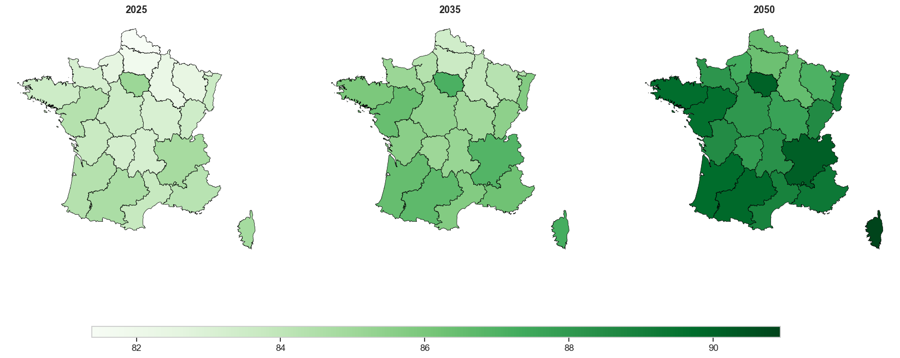
[66]:
mp = MapPlotter(regions, esp_ll, tv_future, "FR", "",cmap="Greens")
#mp.plot_single_year(year=2030)
mp.plot_compare_years(years=[2025, 2035,2050])
#mp.save(path_fr + "/LifeExpectancy_at_birth_ll_color_detra.png")
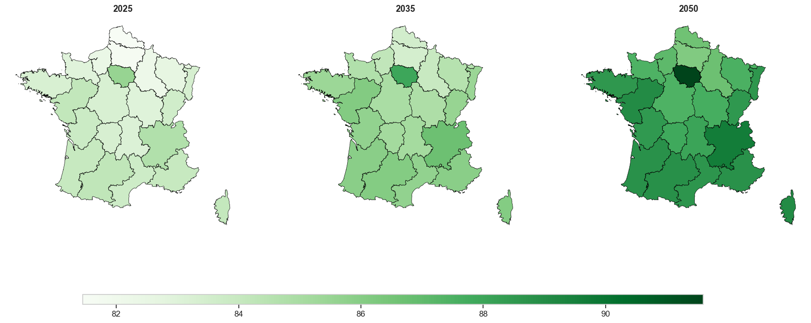
[67]:
import numpy as np
import matplotlib.pyplot as plt
import matplotlib.ticker as ticker
from matplotlib.lines import Line2D
# ── Palette & style ───────────────────────────────────────────────────────────
plt.rcParams.update({
"figure.facecolor": "#ffffff",
"axes.facecolor": "#f7f8fc",
"axes.edgecolor": "#d0d4e0",
"axes.labelcolor": "#444455",
"xtick.color": "#888899",
"ytick.color": "#888899",
"grid.color": "#e0e2ec",
"grid.linewidth": 0.6,
"text.color": "#1a1a2e",
"font.family": "DejaVu Sans",
})
# ── Paramètres ────────────────────────────────────────────────────────────────
HIST_LAST_YEAR = 2022 # coupure historique / projection
ACCENT = "#1a6fc4" # bleu historique (plus foncé sur fond blanc)
PROJ = "#e05c00" # orange projection (plus foncé sur fond blanc)
# ── df_llp : index.name = "horizon", colonnes = régions ──────────────────────
# df_llp doit déjà être chargé dans l'environnement
# Exemple de structure :
# BXL ANT LIM ...
# horizon
# 1990 75.608374 76.072014 76.331329 ...
# 1991 75.835528 76.304287 76.654883 ...
# ...
# 2073 90.413962 92.598911 92.098857 ...
regions = df_esp_llp.columns.tolist()
years = df_esp_llp.index.to_numpy()
# ── Groupes de 3 régions par figure ──────────────────────────────────────────
NCOLS = 3
group_size = NCOLS # 3 régions par figure
legend_elements = [
Line2D([0], [0], color=ACCENT, linewidth=2, label="Historical (1990–2022)"),
Line2D([0], [0], color=PROJ, linewidth=1.8,
linestyle=(0, (4, 2)), label="Projection (2023–2073)"),
]
# Découpe des régions en groupes de 3
groups = [regions[i:i+group_size] for i in range(0, len(regions), group_size)]
for fig_idx, group in enumerate(groups):
n = len(group) # 1, 2 ou 3 selon le dernier groupe
fig, axes = plt.subplots(1, NCOLS, figsize=(18, 5), squeeze=False)
axes = axes.flatten()
fig.subplots_adjust(hspace=0.4, wspace=0.35, top=0.83, bottom=0.15, left=0.05, right=0.97)
fig.text(0.5, 0.95, "",
ha="center", fontsize=14, fontweight="bold", color="#1a1a2e")
fig.text(0.5, 0.89, "",
ha="center", fontsize=9, color="#666677")
for ax, region in zip(axes, group):
vals_all = df_esp_llp[region].to_numpy()
mask_h = years <= HIST_LAST_YEAR
mask_p = years >= HIST_LAST_YEAR
yh, vh = years[mask_h], vals_all[mask_h]
yp, vp = years[mask_p], vals_all[mask_p]
# Zones colorées
ax.fill_between(yh, vh, alpha=0.18, color=ACCENT)
ax.fill_between(yp, vp, alpha=0.12, color=PROJ)
# Ligne de coupure
ax.axvline(HIST_LAST_YEAR, color="#ccccdd", linewidth=1.2, linestyle="--", zorder=1)
ax.text(HIST_LAST_YEAR + 1, vh.min() + 0.1, "proj.",
fontsize=7, color="#aaaacc", va="bottom")
# Courbes
ax.plot(yh, vh, color=ACCENT, linewidth=2.0, solid_capstyle="round", zorder=3)
ax.plot(yp, vp, color=PROJ, linewidth=1.8, linestyle=(0, (4, 2)),
solid_capstyle="round", zorder=3)
# Annotations
ax.annotate(f"{vh[0]:.1f}", xy=(yh[0], vh[0]), xytext=(4, 6),
textcoords="offset points", fontsize=8, color=ACCENT, fontweight="bold")
ax.annotate(f"{vp[-1]:.1f}", xy=(yp[-1], vp[-1]), xytext=(-28, 6),
textcoords="offset points", fontsize=8, color=PROJ, fontweight="bold")
# Titre
ax.set_title(region, fontsize=13, fontweight="bold", color="#1a1a2e", pad=8)
# Axes
ax.yaxis.set_major_formatter(ticker.FormatStrFormatter("%.0f"))
ax.xaxis.set_major_locator(ticker.MultipleLocator(20))
ax.tick_params(labelsize=8)
ax.grid(True, axis="y", linestyle="--", linewidth=0.5)
ax.grid(False, axis="x")
ax.set_xlim(years.min() - 2, years.max() + 2)
ax.set_ylim(vals_all.min() - 0.5, vals_all.max() + 0.5)
for spine in ax.spines.values():
spine.set_edgecolor("#d0d4e0")
spine.set_linewidth(0.8)
# Masquer les subplots vides du dernier groupe
for ax in axes[n:]:
ax.set_visible(False)
# Légende
fig.legend(handles=legend_elements, loc="lower center", ncol=2,
fontsize=9, frameon=False, labelcolor="#444455",
bbox_to_anchor=(0.5, 0.01))
fname = f"esperance_vie_fig{fig_idx+1:02d}.png"
plt.savefig(path_fr + fname, dpi=160, bbox_inches="tight", facecolor="#ffffff")
plt.show()
print(f"✓ Figure {fig_idx+1}/{len(groups)} sauvegardée : {fname}")
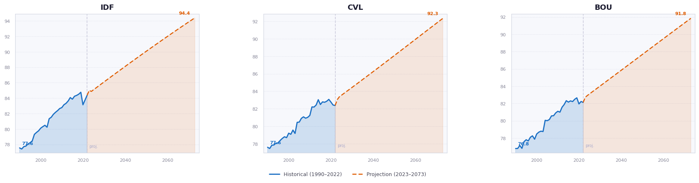
✓ Figure 1/8 sauvegardée : esperance_vie_fig01.png
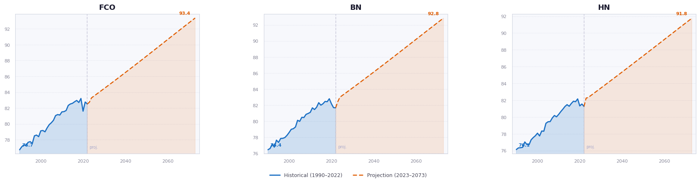
✓ Figure 2/8 sauvegardée : esperance_vie_fig02.png
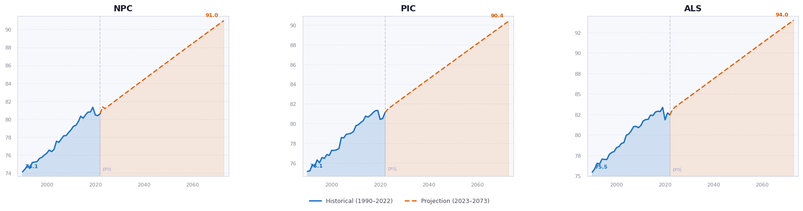
✓ Figure 3/8 sauvegardée : esperance_vie_fig03.png
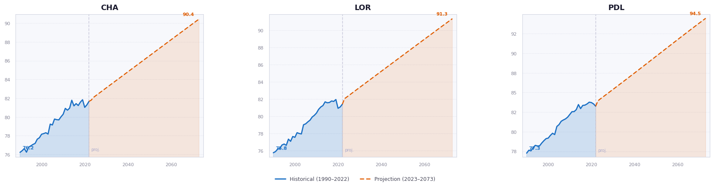
✓ Figure 4/8 sauvegardée : esperance_vie_fig04.png
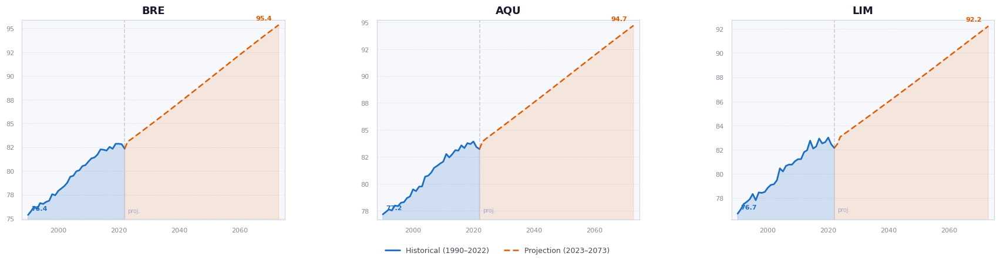
✓ Figure 5/8 sauvegardée : esperance_vie_fig05.png
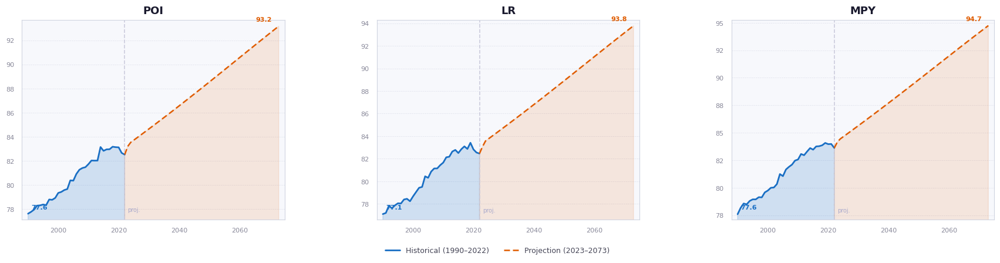
✓ Figure 6/8 sauvegardée : esperance_vie_fig06.png
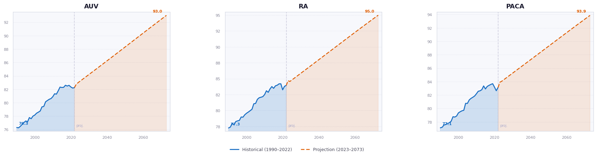
✓ Figure 7/8 sauvegardée : esperance_vie_fig07.png
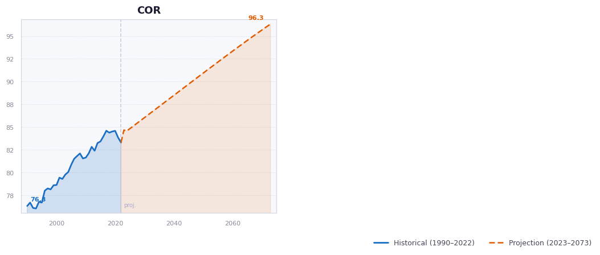
✓ Figure 8/8 sauvegardée : esperance_vie_fig08.png
[ ]:
import numpy as np
import matplotlib.pyplot as plt
import matplotlib.patches as mpatches
from pathlib import Path
def plot_life_expectancy(
ex: np.ndarray,
tv_hist: np.ndarray,
tv_proj: np.ndarray,
age_index: int = 0,
region_names: list = None,
regions_per_fig: int = 3,
ci_lower: np.ndarray = None,
ci_upper: np.ndarray = None,
save_path: str = None,
dpi: int = 150,
):
"""
Plot the evolution of life expectancy by region (historical + projected).
Generates one figure per group of ``regions_per_fig`` regions.
Historical data (1990–2022) is drawn as a solid line; projected years
are drawn as a dashed line with an optional shaded confidence interval.
Parameters
----------
ex : np.ndarray, shape (nb_ages, nb_years, nb_regions)
Life expectancy array. The full time axis is
``np.concatenate([tv_hist, tv_proj])``.
tv_hist : np.ndarray
Historical year vector (e.g. 1990–2022, length 33).
tv_proj : np.ndarray
Projected year vector (e.g. 2023–2072).
age_index : int
Age slice to plot (0 = e₀, 65 = e₆₅, …). Default: 0.
region_names : list of str, optional
Labels for each region. Defaults to ["Region 1", "Region 2", …].
regions_per_fig : int
Number of regions per figure (= subplot columns). Default: 3.
ci_lower : np.ndarray, shape (nb_proj_years, nb_regions), optional
Lower bound of the confidence interval for the projected period.
ci_upper : np.ndarray, shape (nb_proj_years, nb_regions), optional
Upper bound of the confidence interval for the projected period.
save_path : str or Path, optional
Base path for saving figures. Each figure is saved with a
``_part{i}`` suffix before the extension.
Example: ``"output/ex.png"`` → ``"output/ex_part1.png"``, …
The parent directory is created automatically if it does not exist.
dpi : int
Resolution used when saving (default: 150).
Returns
-------
figs : list of matplotlib.figure.Figure
One figure per group of regions.
"""
tv_hist = np.asarray(tv_hist)
tv_proj = np.asarray(tv_proj)
tv_all = np.concatenate([tv_hist, tv_proj])
nb_ages, nb_years, nb_regions = ex.shape
n_hist = len(tv_hist) # number of historical years
n_proj = len(tv_proj) # number of projected years
if region_names is None:
region_names = [f"Region {g + 1}" for g in range(nb_regions)]
# Extract the chosen age slice → shape (nb_years, nb_regions)
ex_age = ex[age_index, :, :]
# Split into historical and projected blocks
ex_hist = ex_age[:n_hist, :] # (n_hist, nb_regions)
ex_proj = ex_age[n_hist:, :] # (n_proj, nb_regions)
colors = plt.rcParams["axes.prop_cycle"].by_key()["color"]
n_figs = int(np.ceil(nb_regions / regions_per_fig))
figs = []
# Label displayed in the y-axis
age_label = "e₀" if age_index == 0 else f"e{age_index}"
for f in range(n_figs):
g_start = f * regions_per_fig
g_end = min(g_start + regions_per_fig, nb_regions)
group = list(range(g_start, g_end))
ncols = len(group)
fig, axes = plt.subplots(
1, ncols,
figsize=(5 * ncols, 4),
sharey=False,
)
axes = np.array(axes).reshape(-1)
for pos, g in enumerate(group):
ax = axes[pos]
color = colors[g % len(colors)]
# ── Historical curve (solid line) ────────────────────────
ax.plot(
tv_hist,
ex_hist[:, g],
color=color,
lw=2.0,
label="Historical",
)
# ── Bridge point connecting historical to projected ──────
bridge_x = np.concatenate([[tv_hist[-1]], tv_proj])
bridge_y = np.concatenate([[ex_hist[-1, g]], ex_proj[:, g]])
# ── Confidence interval (shaded band) ───────────────────
if ci_lower is not None and ci_upper is not None:
lo_bridge = np.concatenate([[ex_hist[-1, g]], ci_lower[:, g]])
hi_bridge = np.concatenate([[ex_hist[-1, g]], ci_upper[:, g]])
ax.fill_between(
bridge_x,
lo_bridge,
hi_bridge,
color=color,
alpha=0.18,
label="95% CI",
)
# ── Projected curve (dashed line) ────────────────────────
ax.plot(
bridge_x,
bridge_y,
color=color,
lw=2.0,
label="Projected",
)
# ── Vertical separator between history and projection ────
ax.axvline(tv_hist[-1], color="grey", lw=0.8, linestyle=":")
ax.text(
tv_hist[-1] + 0.5,
ax.get_ylim()[0] if ax.get_ylim()[0] != 0 else ex_hist[:, g].min() * 0.995,
"proj.",
fontsize=7,
color="grey",
va="bottom",
)
# ── Styling ──────────────────────────────────────────────
ax.set_title(region_names[g], fontsize=11, fontweight="bold")
ax.set_xlabel("Year", fontsize=9)
ax.set_ylabel(f"Life expectancy {age_label} (years)", fontsize=9)
ax.legend(fontsize=7, loc="best")
ax.grid(True, alpha=0.3)
ax.tick_params(labelsize=8)
fig.suptitle(
f"Life expectancy {age_label} by region",
fontsize=12,
fontweight="bold",
y=1.01,
)
fig.tight_layout()
figs.append(fig)
# # ── Save ─────────────────────────────────────────────────────
# if save_path is not None:
# p = Path(save_path)
# p.parent.mkdir(parents=True, exist_ok=True)
# out = p.parent / f"{p.stem}_part{f + 1}{p.suffix}"
# fig.savefig(out, dpi=dpi, bbox_inches="tight")
# print(f"✅ Saved → {out}")
plt.show()
return figs
# ════════════════════════════════════════════════════════════════════
# USAGE EXAMPLE
# ════════════════════════════════════════════════════════════════════
# ex : shape (111, 84, 22) → (nb_ages, nb_years, nb_regions)
# tv_hist : np.arange(1990, 2023) → 33 years
# tv_proj : np.arange(2023, 2074) → 51 projected years
# (total nb_years = 33 + 51 = 84)
# ── Simple plot (e₀, no CI) ─────────────────────────────────────────
# figs = plot_life_expectancy(
# ex = ex,
# tv_hist = np.arange(1990, 2023),
# tv_proj = np.arange(2023, 2074),
# age_index = 0,
# )
# ── With confidence interval ────────────────────────────────────────
# figs = plot_life_expectancy(
# ex = ex,
# tv_hist = np.arange(1990, 2023),
# tv_proj = np.arange(2023, 2074),
# age_index = 0,
# ci_lower = ex_lower, # shape (51, 22)
# ci_upper = ex_upper, # shape (51, 22)
# region_names = region_list,
# save_path = "output/life_expectancy_e0.png",
# )
# ── Plot e₆₅ instead of e₀ ─────────────────────────────────────────
# figs = plot_life_expectancy(
# ex = ex,
# tv_hist = np.arange(1990, 2023),
# tv_proj = np.arange(2023, 2074),
# age_index = 65,
# )
[79]:
tv_hist : np.arange(1990, 2023) #→ 33 years
tv_proj : np.arange(2023, 2074) #→ 51 projected years
#── Simple plot (e₀, no CI) ─────────────────────────────────────────
figs = plot_life_expectancy(
ex = esp_llp,
tv_hist = np.arange(1990, 2023),
tv_proj = np.arange(2023, 2074),
age_index = 0,
region_names=region_labels
)
C:\Users\Idrissa Belem\AppData\Local\Temp\ipykernel_11660\3738820307.py:161: UserWarning: Glyph 8320 (\N{SUBSCRIPT ZERO}) missing from font(s) Arial.
fig.tight_layout()
c:\Users\Idrissa Belem\Documents\GitHub\morta_nuts2\.venv\Lib\site-packages\IPython\core\pylabtools.py:170: UserWarning: Glyph 8320 (\N{SUBSCRIPT ZERO}) missing from font(s) Arial.
fig.canvas.print_figure(bytes_io, **kw)
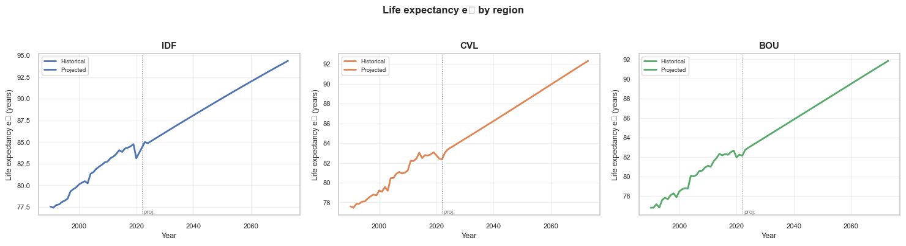
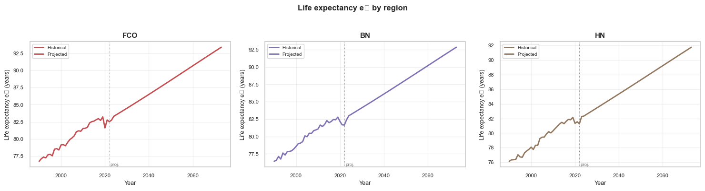
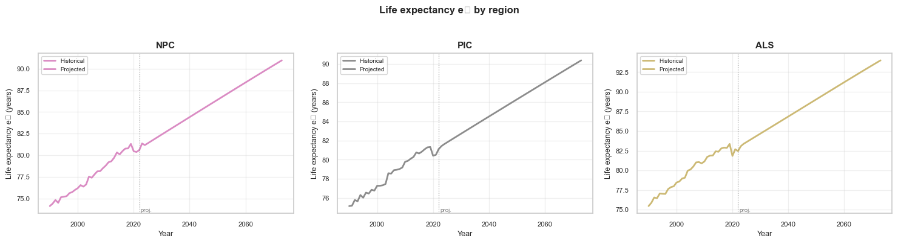
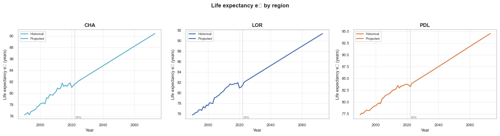
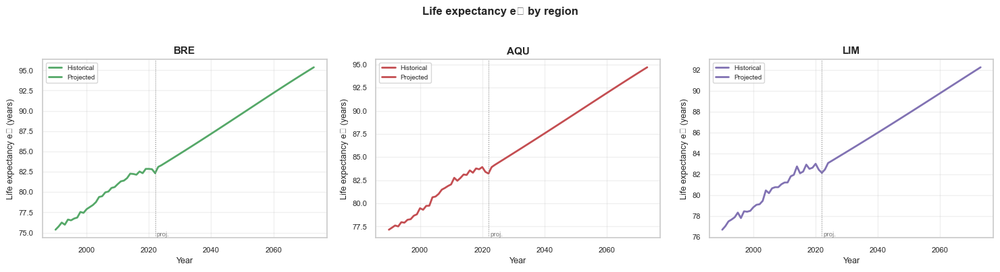
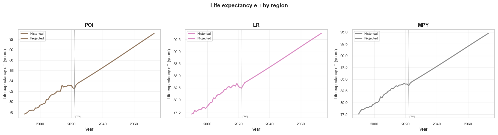
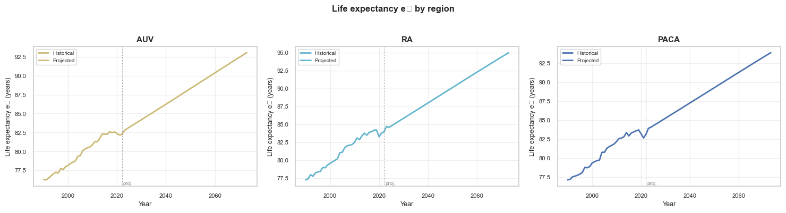
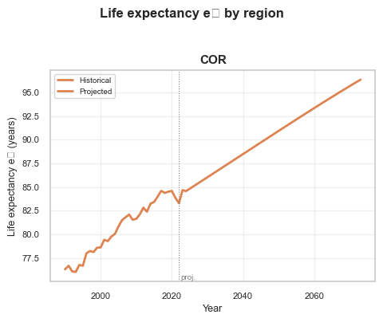
Annuity_pricing
[395]:
# xe = np.array([60]) # âge de souscription
# price_national = Annuity_pricing(
# xe = xe,
# xv = xv,
# log_Muxtg = logmu_nation_lcp, # (nb_ages, horizon, nb_reg, nb_simul)
# duration = 20,
# rate = 0.02 # taux d'actualisation à adapter
# )
# print("price shape:", price_national.shape) # (1, nb_reg, nb_simul)
[396]:
# price_multi = Annuity_pricing(
# xe = xe,
# xv = xv,
# log_Muxtg = logmu_extrap_lcp, # (nb_ages, horizon, nb_reg, nb_simul)
# duration = 20,
# rate = 0.02 # taux d'actualisation à adapter
# )
# print("price shape:", price_multi.shape) # (1, nb_reg, nb_simul)
[397]:
# France_nuts2 = {
# "FR10": "IDF", # Île-de-France
# "FRB0": "CVL", # Centre-Val de Loire
# "FRC1": "BOU", # Bourgogne
# "FRC2": "FCO", # Franche-Comté
# "FRD1": "BN", # Basse-Normandie
# "FRD2": "HN", # Haute-Normandie
# "FRE1": "NPC", # Nord-Pas de Calais
# "FRE2": "PIC", # Picardie
# "FRF1": "ALS", # Alsace
# "FRF2": "CHA", # Champagne-Ardenne
# "FRF3": "LOR", # Lorraine
# "FRG0": "PDL", # Pays de la Loire
# "FRH0": "BRE", # Bretagne
# "FRI1": "AQU", # Aquitaine
# "FRI2": "LIM", # Limousin
# "FRI3": "POI", # Poitou-Charentes
# "FRJ1": "LR", # Languedoc-Roussillon
# "FRJ2": "MPY", # Midi-Pyrénées
# "FRK1": "AUV", # Auvergne
# "FRK2": "RA", # Rhône-Alpes
# "FRL0": "PACA", # Provence-Alpes-Côte d’Azur
# "FRM0": "COR" # Corse
# }
# region_labels = [France_nuts2.get(r, r) for r in regions]
[398]:
# # Cas 1 – régions seules
# AnnuityBoxPlotter(price_multi, region_labels).plot()
[ ]:
# # ── AnnuityBoxPlotter — one extra series ───────────────────────────
# AnnuityBoxPlotter(price_multi, region_labels, extra_series=[
# ExtraSeries(price_national, "LC", position="last"),
# ]).plot()
notebook controller is DISPOSED.
View Jupyter <a href='command:jupyter.viewOutput'>log</a> for further details.
[ ]:
# lcp_mean = np.mean(esp_lcp,axis=3)
# llp_mean = np.mean(esp_llp,axis=3)
notebook controller is DISPOSED.
View Jupyter <a href='command:jupyter.viewOutput'>log</a> for further details.
Annexes
[62]:
# shapef = gpd.read_file("C:/Users/Idrissa Belem/Documents/GitHub/test_projet/NUTS_files/NUTS_RG_01M_2024_3035.shp")
# stock = "C:/Users/Idrissa Belem/Documents/GitHub/morta_nuts2/data"
# mxt_raw = load_mxt_raw(shapef,country="FR",data_path=stock)
# Dxt_raw = load_dxt_raw(shapef,country="FR",data_path=stock)
# Lxt_raw = load_lxt_raw(shapef,country="FR",data_path=stock)
[ ]:
# #Construction base spline pour connaître n_basis
# B, knots, n_basis = make_bspline_basis(xv, degree, n_knots)
# ax_coef_init = np.zeros(n_basis)
# bx_coef_init = np.ones((len(regions), n_basis))
# kappa_init = np.ones(len(tv))
# model_multi = LiLee.Parametric.LeeAndLi(
# degree=degree,
# n_knots=n_knots,
# lam=lam,
# nb_iter=5000,
# eta0=0.2,
# tol=1e-3,
# verbose=True,
# )
# result_llp = model_multi.fit(
# ax_coef_init = ax_coef_init,
# bx_coef_init = bx_coef_init,
# kappa_init = kappa_init,
# Extg = Extg,
# Dxtg = Dxtg,
# xv = xv,
# tv = tv,)
notebook controller is DISPOSED.
View Jupyter <a href='command:jupyter.viewOutput'>log</a> for further details.
[ ]:
[ ]:
# # Juste après init_params, avant le fit
# alpha_coef, beta_coef, beta_g_coef, kappa_common, kappa_g = model_p.init_params(Dxtg, Extg, xv)
# print("kappa_g NaN :", np.isnan(kappa_g).any())
# print("beta_g_coef NaN :", np.isnan(beta_g_coef).any())
# print("kappa_common NaN :", np.isnan(kappa_common).any())
# # Drifts kappa_g après init
# diffs = np.diff(kappa_g, axis=1)
# drift = diffs.mean(axis=1)
# for g, name in enumerate(regions):
# print(f"{name}: drift = {drift[g]:.4f}")
[ ]:
# import matplotlib.pyplot as plt
# import numpy as np
# mae_regional = {
# "Li and Lee variant": mae_ll['wmae_by_region'], # (nb_regions,)
# "Li and Lee": mae_llp['wmae_by_region'], # (nb_regions,)
# }
# mae_national = {
# "National model": mae_lcp['wmae_global'], # scalaire
# }
# France_nuts2 = {
# "FR10": "IDF", "FRB0": "CVL", "FRC1": "BOU", "FRC2": "FCO",
# "FRD1": "BN", "FRD2": "HN", "FRE1": "NPC", "FRE2": "PIC",
# "FRF1": "ALS", "FRF2": "CHA", "FRF3": "LOR", "FRG0": "PDL",
# "FRH0": "BRE", "FRI1": "AQU", "FRI2": "LIM", "FRI3": "POI",
# "FRJ1": "LR", "FRJ2": "MPY", "FRK1": "AUV", "FRK2": "RA",
# "FRL0": "PACA","FRM0": "COR"
# }
# region_labels = list(France_nuts2.values())
# all_models = list(mae_regional.keys()) + list(mae_national.keys())
# n_models = len(all_models)
# colors = ["#1f77b4", "#ff7f0e", "#2ca02c"]
# width = 0.8 / n_models
# n = len(region_labels)
# x = np.arange(n + 1) # +1 pour la colonne nationale
# fig, ax = plt.subplots(figsize=(15, 5))
# # --- Barres régionales ---
# for i, (model, color) in enumerate(zip(mae_regional.keys(), colors)):
# offset = (i - n_models / 2 + 0.5) * width
# ax.bar(x[:n] + offset, mae_regional[model], width, label=model, color=color)
# # --- Barre nationale (même width, même style) ---
# for i, (model, value) in enumerate(mae_national.items()):
# model_idx = len(mae_regional) + i
# offset = (model_idx - n_models / 2 + 0.5) * width
# ax.bar(x[-1] + offset, value, width, label=f"{model}", color=colors[model_idx])
# # Ligne verticale de séparation
# ax.axvline(n - 0.5, color="gray", linewidth=0.8, linestyle="--", alpha=0.5)
# xtick_labels = region_labels + ["National"]
# ax.set_xticks(x)
# ax.set_xticklabels(xtick_labels, rotation=0, fontsize=8)
# ax.set_xlabel("Région")
# ax.set_ylabel("WMAE")
# ax.legend()
# ax.grid(axis="y", alpha=0.3)
# plt.tight_layout()
# plt.show()